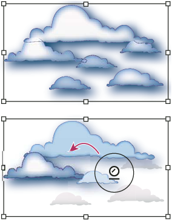

Modify symbol instances in a symbol set
You use the symbolism tools to modify multiple symbol instances in a set. For example, you can disperse instances over a larger area using the Symbol Scruncher tool or gradually tinting the color of instances to make them look more realistic.
Although you can use symbolism tools on individual symbol instances, they are most effective when used on symbol sets. When working with individual symbol instances, most of these tasks are easily accomplished using the tools and commands you use on regular objects.
 Change stacking order of symbol instances in a set
Change stacking order of symbol instances in a set
- Select the Symbol Shifter tool .
- Do one of the following:
-
To move symbol instances, drag in the direction you want the symbol instances to move.
-
To bring symbol instances forward, Shift-click the symbol instance.
-
To send symbol instances backward, hold down Alt (Windows) or Option (Mac OS) and Shift-click the symbol instance.
-
Gather or scatter symbol instances
- Select the Symbol Scruncher tool .
- Do one of the following:
-
Click or drag in the area where you want to pull the symbol instances toward each other.
-
Hold down Alt (Windows) or Option (Mac OS), and click or drag in the area where you want to push symbol instances away from each other.
-
Resize symbol instances
- Select the Symbol Sizer tool .
- Do one of the following:
-
Click or drag in the set where you want to increase the size of the symbol instances.
-
Hold down Alt (Windows) or Option (Mac OS), and click or drag where you want to decrease the size of the symbol instances.
-
Hold down Shift as you click or drag to preserve the density of the symbol instances while resizing.
-
Rotate symbol instances
- Select the Symbol Spinner tool .
- Click or drag in the direction you want the symbol instances to orient.
Stain symbol instances
Staining a symbol instance changes the hue toward the tint color, while preserving the original luminosity. (It works in the same way as the Tints and Shades colorization method of tinting brushes.) This method uses the luminosity of the original color and the hue of the colorization color to generate the resulting color. Consequently, colors with very high or very low luminosity change very little; black or white objects don’t change at all.
 To achieve a method of colorization
that will also affect black and white objects, use the Symbol Styler
tool with a graphic style that uses the desired fill color.
To achieve a method of colorization
that will also affect black and white objects, use the Symbol Styler
tool with a graphic style that uses the desired fill color.- In the Color panel, select the fill color that you want to use as the colorization color.
- Select the Symbol Stainer tool and
do one of the following:
-
Click or drag over the symbol instances you want to stain with the colorization color. The amount of colorization gradually increases, and the symbol instance’s color gradually changes to the colorization color.
-
Hold down Alt (Windows) or Option (Mac OS) as you click or drag to decrease the colorization amount and reveal more of the original symbol color.
-
Hold down Shift as you click or drag to keep the colorization amount constant, while gradually changing the color of the symbol instances to the colorization color.
Note: Using the Symbol Stainer tool results in increased file size and decreased performance. When memory or exported Flash/SVG file size is a concern, do not use this tool.
-
Adjust transparency of symbol instances
- Select the Symbol Screener tool .
- Do one of the following:
-
Click or drag where you want to increase the symbol’s transparency.
-
Hold down Alt (Windows) or Option (Mac OS), and click or drag where you want to decrease the symbol’s transparency.
-
Apply a graphic style to symbol instances
The Symbol Styler tool lets you apply or remove a graphic style from a symbol instance. You can control the amount and location of the application. For example, you can apply a style gradually so that some symbol instances display the style at full strength and others display the style at partial strength.

You can switch to the Symbol Styler tool when using
any other symbolism tool by clicking a style in the Graphic Styles
panel.- Select the Symbol Styler tool .
- Select a style in the Graphic Styles panel, and do one
of the following:
-
Click or drag where you want to apply the style to the symbol set. The amount of style applied to the symbol instances increases, and the style gradually changes.
-
Hold down Alt (Windows) or Option (Mac OS) as you click or drag to decrease the style amount and reveal more of the original, unstyled symbol.
-
Hold down Shift as you click or drag to keep the amount of style constant, while gradually changing the symbol instance style to the selected style.
Note: It is very important to perform steps 1 and 2 in the specified order. If you select a style while a tool other than the symbolism tool is selected, the style will apply immediately to the entire selected symbol instance set.
-